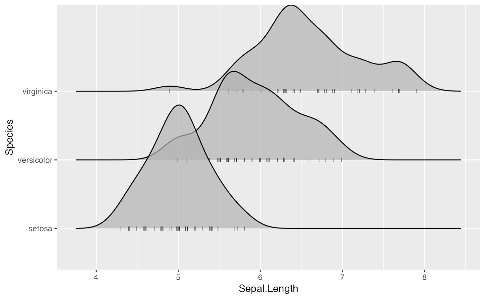

This is a position adjustment specifically for geom_density_ridges() and related geoms. It
only jitters the points drawn by these geoms, if any. If no points are present, the plot
remains unchanged. The effect is similar to ggplot2::position_jitter(): points are randomly shifted up and down
and/or left and right.
Usage
position_points_jitter(
width = 0,
height = 0.2,
yoffset = 0,
adjust_vlines = FALSE,
seed = NULL
)Arguments
- width
Width for horizontal jittering. By default set to 0.
- height
Height for vertical jittering, applied in both directions (up and down). By default 0.2.
- yoffset
Vertical offset applied in addition to jittering.
- adjust_vlines
If
TRUE, adjusts vertical lines (as are drawn for quantile lines, for example) to align with the point cloud.- seed
Random seed. If set to NULL, the current random number generator is used. If set to NA, a new random random seed is generated. If set to a number, this number is used as seed for jittering only.
See also
Other position adjustments for ridgeline plots: position_points_sina, position_raincloud
Examples
library(ggplot2)
# default jittered points
ggplot(iris, aes(x = Sepal.Length, y = Species)) +
geom_density_ridges(jittered_points = TRUE, position = "points_jitter", alpha = 0.7)
#> Picking joint bandwidth of 0.181
# simulating a rug
ggplot(iris, aes(x = Sepal.Length, y = Species)) +
geom_density_ridges(jittered_points = TRUE, point_shape = '|', alpha = 0.7, point_size = 2,
position = position_points_jitter(width = 0.02, height = 0))
#> Picking joint bandwidth of 0.181
